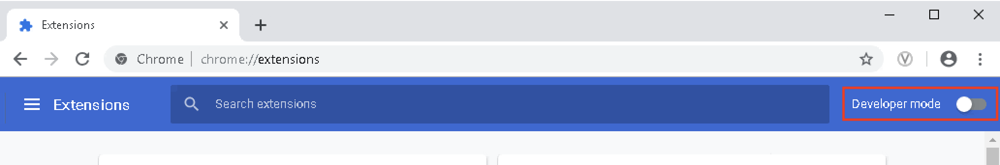
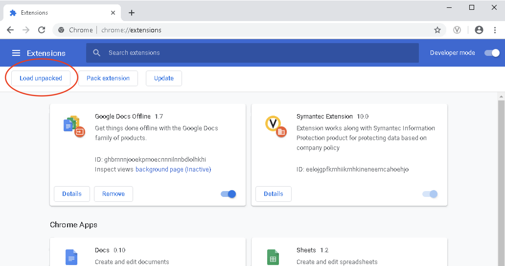
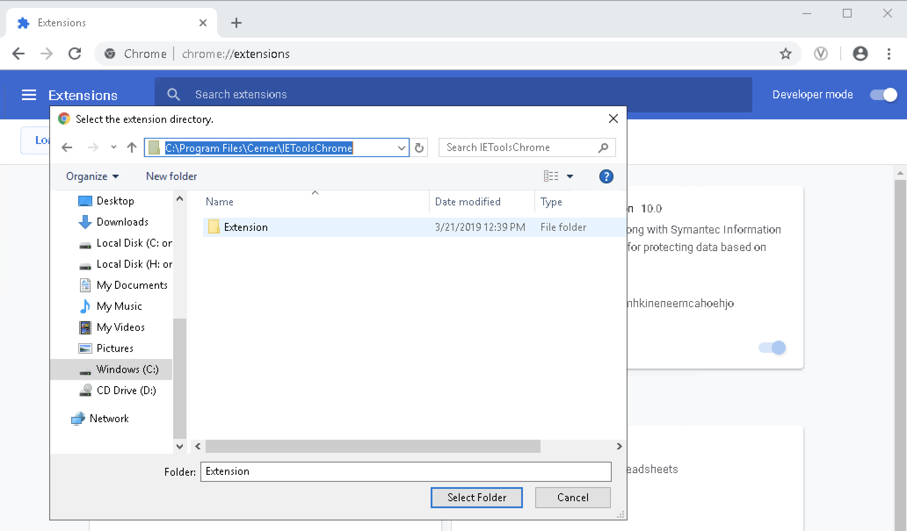
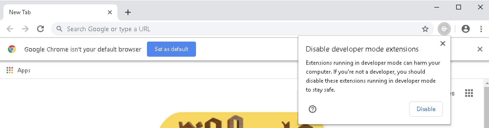
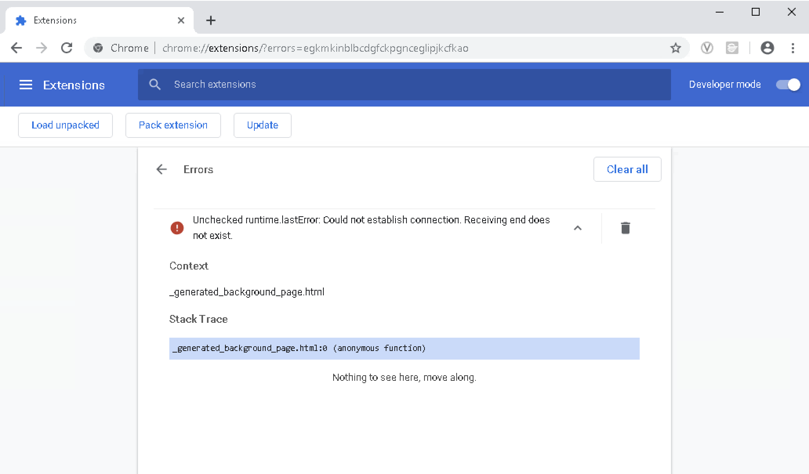

How To Install The Chrome Extension
Congratulations! You have successfully installed IEToolsChrome 'helper' on your PC. Now, you need to load the extension into Chrome Browser. Eventually our extension will be published in the Chrome Webstore & when that happens, we'll providew a link to install it from this page. Until that happens, please use the steps below...
- Launch Chrome Browser.
- Navigate to chrome://extensions/.
- Move the toggle button, "Developer mode", to the right to enable devloper mode.
 - Click on the button, "Load unpacked".
 - In the dialog, navigate to your install directory: "C:\Program Files\Cerner\IEToolsChrome" & highlight the folder, Extension, then click on "Select Folder".

After the extension is loaded, you will see "Cerner Tools" listed on the extension page, an icon will appear in the Chrome header, and a background processes will be kicked off called, "IEToolsChrome.exe". You can hide the icon in the Chrome header if you want by right-clicking on it. Until our extension is published in the Chrome store, you'll receive a warning every time you start Chrome.

You can safely ignore the error: Unchecked runtime.lastError: Could not establish connection. Receiving end does not exist. This message may appear in the extension log
